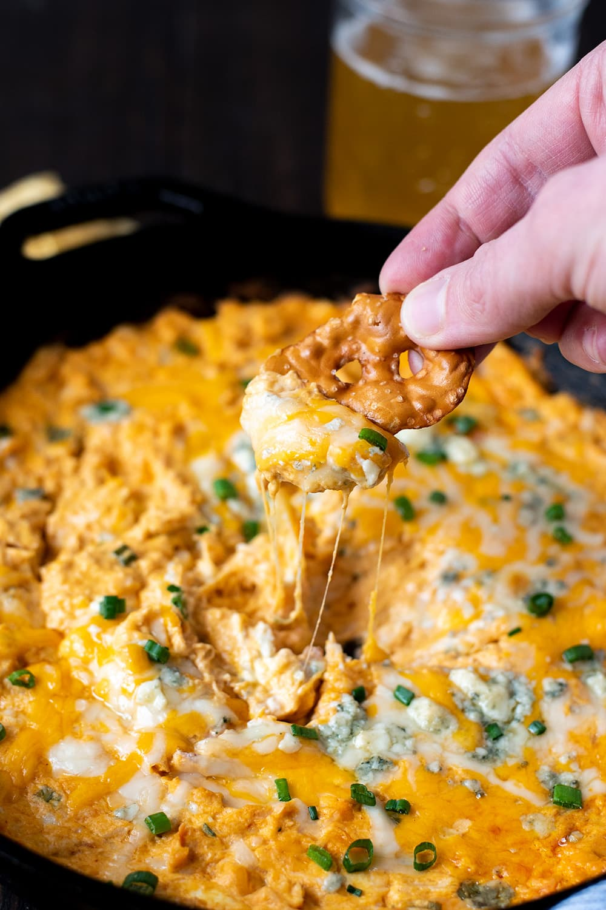

Buffalo Chicken Dip

A Southern Favorite!
This is by far one of my favorite recipes to make during football season. It is simple, yet delicious. And even quite filling! We have sometimes (accidentally) substituted this dip for a meal!
Ingredients:
2, 8 ounce packages of cream cheese, softened
1 cup of your favorite buffalo wing sauce, or pepper sauce (e.g. Frank's Red Hot®)
2 cups shredded Cheddar or Colby-Monterey Jack cheese
1 bunch celery, cleaned and cut into 4 inch pieces
Finely sliced green onions or chives